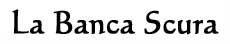

La Banca Scura è la banca di stato
pergariana e ora dell'Impero Scuro.
Moneta utilizzata: Karsi
Sede Centrale
PERGAR
Filiali secondarie :
SIMIAR
IMIAN
MIRGAN
MOLGON
NEMBUS
PORTO TEMPESTOSO
RAVENFORT
Gli
sportelli sono aperti tutti i giorni la mattina fino alle ore 12.00
Esiste un unico tipo di conto
utilizzato da persone ricche . I poveri al massimo affidano i loro risparmi a
casse private che però non sono banche ma offrono solo il servizio di custodia.
CONTO SEMPLICE:
Apertura nessuno, Chiusura 10 ducati
Minimo per aprire 150 Karsi
Massimo da depositare illimitato
Si ritira come si vuole ma se scendi a 10
ducati ( 30 Karsi ) chiusura
Costo annuo 10 ducati all’anno da pagare il
primo giorno di Norio.
Permette a chi lo ha di scrivere lettere di cambio
che la banca pagherà, queste sono fatte tramite degli speciali fogli di
pergamena con lamine di filigrana magiche forniti dalla Banca
al costo di 15 karsi l'uno. Ogni lettera permette un pagamento fino a 5000 karsi.
La Banca Scura inoltre cambia ai correntisti al costo del 4 % assegni e per gli
esterni che vogliano liquidità con una tassa dell’8 % assegni della
Banca dei Maghi (sede centrale a
Tarsis )
Banca Commerciale Costiera (sede centrale ad Artas )
Banca Repubblicana (sede centrale a Silveria )
Banca dell’Argento (sede centrale a Silveria )
Banca Reale (sede centrale a Tarsis )
Banca del Grano (sede centrale a Sinkros )
Banca Granducale (sede centrale ad Artas )
CONTO
VINCOLATO (non richiede che si abbia un CONTO SEMPLICE):
Qui si fanno anche conti vincolati
che forniscono un guadagno percentuale che varia al variare del tempo per il
quale si vincola il denaro, gli interessi maturano interamente allo scadere del
periodo prescelto:
|
Anni fissati |
% annua di guadagno |
|
1 |
7 % |
|
2 |
8 % |
|
3 |
9 % |
|
4 |
9.5 % |
|
5 |
10 % |
|
6 |
10.5 % |
|
7 |
11 % |
|
8 |
11.5 % |
|
9 |
12 % |
|
10 |
13 % |
PRESTITI
Solo i correntisti di un CONTO
SEMPLICE possono chiedere prestiti alla banca:
Prestito
sull’onore , senza che sia offerta alcuna garanzia, sono a totale
discrezionalità del funzionario imperiale competente ma hanno durata
massima annuale.
fino a 1000 karsi , Alto Dirigente
di Banca Scura
da 1001 a 5000 karsi , Primo
Dirigente della Banca Scura
Oltre a tale somma può aggiungersi
quella dei prestiti garantiti che sono di
competenza degli Alti Dirigente di Banca Scura a meno che il loro ammontare non
superi nel totale i 10000 karsi nel qual caso è necessaria anche la firma del
Primo dirigente della Banca Scura :
Chi richiede un prestito dando in garanzia beni che rimangono nel suo possesso potrà ottenere un prestito pari al massimo al 10% del valore dei beni dati in garanzia. Per tutta la durata del prestito il debitore non potrà alienare, prestare e far uscire dall'Impero i beni sui quali ha acceso garanzia, inoltre dovrà evitare di comprometterne in ogni modo il valore. Qualora il debitore esegua una di queste azioni vietate senza che abbia pagato il debito garantito dal bene sarà punito con pena lieve, inoltre dovrà entro 1 mese offrire altri beni in garanzia o pagare per il debito rimasto scoperto. Se il debitore, nonostante non abbia commesso azioni vietate sui beni in garanzia non è in grado di ripagare il suo debito i beni offerti in garanzia diventeranno di proprietà della Banca Scura e il debitore sarà liberato dal debito.
Pegno
Chi richiede un prestito dando in garanzia beni mobili che saranno custoditi gratuitamente dalla Banca Scura potrà ottenere un prestito per un ammontare pari al 75% del valore del pegno. Se allo scadere del prestito il debitore non lo estingue interamente il pegno diverrà di proprietà della Società ed il debitore non avrà nulla a pretendere. Quali sono i beni accettabili in pegno è a discrezione della direzione della banca.
Ipoteca
Chi richiede un prestito dando in garanzia beni immobili, che rimangono nel suo possesso (ipoteca), potrà ottenere un prestito pari al massimo al 50% dei beni dati in garanzia. Per tutta la durata del prestito il debitore non potrà alienare, prestare e far fuoriuscire dall'Impero i beni sui quali ha acceso garanzia, inoltre dovrà evitare di comprometterne in ogni modo il valore. Qualora il debitore esegua una di queste azioni vietate senza che abbia pagato il debito garantito dal bene sarà punito con pena lieve, inoltre dovrà entro 1 mese offrire altri beni in garanzia o pagare per il debito rimasto scoperto. Se allo scadere del prestito il debitore non lo estingue interamente il bene diverrà di proprietà della Società ed il debitore non avrà nulla a pretendere.
Il tasso di
interesse generale è del 17 % annuo, ( arrotondato a karso in eccesso )
gli interessi non si considerano come soldi prestati ai fini delle garanzie.
L'Alto Dirigente di Banca Scura con una adeguata motivazione può chiedere al
Primo Dirigente della Banca Scura che il tasso di interesse sia ridotto fino a
un minimo del 15 %.
All’accensione del prestito il
debitore sceglierà per quanti anni chiedere il prestito fino a un massimo di 5
anni per la restituzione. A questo punto si calcolerà la somma totale dovuta
dal debitore comprensiva dell’anatocismo calcolato annualmente. Dalla data di
ottenimento della somma fino alla data di scadenza il debitore avrà la
possibilità di estinguere il suo debito pagando la somma totale dovuta non
rileva quanto prima dalla scadenza il debitore abbia pagato. Qualora il debitore
abbia scelto una data inferiore ai 5 anni per la restituzione alla fine del
periodo pattuito potrà rinnovare il prestito di anno in anno pagando però
interessi moratori del 20% anticipati per gli anni di ritardo, su tali interessi
pagati in anticipo dovrà continuare anche a pagare l’anatocismo. Qualora il
debitore allo scadere del 5° anno non pagherà interessi e capitale sarà
ritenuto insolvente e si procederà come per legge.
Non possono ammettersi pagamenti
parziali di capitale.
Esempio , Vonatar il mago chiede un
prestito a 2 anni di 1000 karsi. Il suo debito sarà quindi di 1000 + 170 per il
primo anno e + 199 per il secondo per un totale = 1369
Vonatar sarà liberato del debito solo quando avrà pagato 1369 karsi, trascorsi
i due anni Vonatar però non ha i soldi e vuole prolungare il prestito per un
altro anno. Restando ferme le sue garanzie deve però versare in anticipo gli
interessi per l’anno a venire ( il 20 % di 1369 ) e cioè 274 karsi. Potrà a
questo punto attendere un ulteriore anno allo scadere del quale o pagherà le
1369 o dovrà pagare gli interessi moratori sulla somma complessiva comprensiva
degli interessi che ha pagato l’anno prima ( 20 % di 1369 + 274 = 329 ) . Allo
scadere del quinto anno il debitore dovrà pagare obbligatoriamente le 1369 +
gli interessi moratori sui 3 anni di mora (20 % di 1369 + 274 + 329 = 395 )
quindi 1369 + 395 = 1764 karsi.
CAMBI ESTERI E
DI MONETE :
Chi vuole cambiare fra monete
pergariane gratuito , ma se si vogliono ducati o imperiali 3%
Chi vuole monete estere paga se correntista il 6 % se esterno il 10 %
CASSETTE DI
SICUREZZA :
Si affittano qui anche camere di
sicurezza :
Coloro che non hanno un conto pagano all’inizio di ogni contratto di custodia
karsi 10
Cassetta piccola ( larga 40 cm. Alta
40 cm. Profonda 1 metro ) Capacità : 70 lb.
Per un anno 70 karsi
Per anno successivo al primo 65 karsi
Multa per giorno di ritardo 4 scuri
Cassetta grande ( larga 50 cm. Alta
50 cm. Profonda 1.20 metro ) Capacità : 130 lb.
Per un anno 120 karsi
Per anno successivo al primo 100 karsi
Multa per giorno di ritardo 8 scuri
Dopo 1 anno di ritardo diventa della
banca il contenuto se il proprietario non si fa vivo, se si fa vivo ricomincia a
contare il tempo e per prendere la roba deve pagare la penale. La banca può se
il cliente vuole non controllare il contenuto della cassetta ma in questo caso,
per furto verrà risarcito solo una cifra prestabilita di 500 karsi per cassetta
piccola e 800 karsi per grande.
Altrimenti si può depositare e dichiarare il contenuto alla banca che lo stima e lo mette nel registro di cassa.